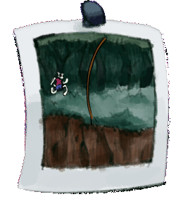
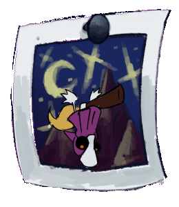
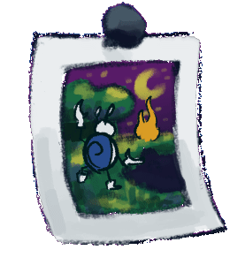

Idei Kiképzések
(Az árak kénpengőben értendők)
(Az árak kénpengőben értendők)

Túlélés a Rengetegben
10 hónapholdas kurzus, ami mindent megtanít a legkeményebb tereppel való megküzdésről, és legelszántabb hősökkel való szembeszállásról. Ha főgonosz nem, akkor kiváló csatlós lesz a tanítványból.
Helyszínek: Kiképző, Rengeteg, Mágikus Aknamező
Időtartam: 11. hónaphold 34. napjától - 21. hónaphold 34. napjáig
Ár: 30.000,-
10 hónapholdas kurzus, ami mindent megtanít a legkeményebb tereppel való megküzdésről, és legelszántabb hősökkel való szembeszállásról. Ha főgonosz nem, akkor kiváló csatlós lesz a tanítványból.
Helyszínek: Kiképző, Rengeteg, Mágikus Aknamező
Időtartam: 11. hónaphold 34. napjától - 21. hónaphold 34. napjáig
Ár: 30.000,-
Seprűn repülés a Véres Csúcsok között
A tanuló 3 sötéthónap alatt megtanulja a seprűn való utazás, bájitalhajigálás, és pékáru-szállítás minden fortélyát.
Biztonságuk garantált, testük végig a seprűhöz lesz rögzítve.
Helyszínek: Véres Csúcsok, a Hold (ha minden jól sikerül)
Időtartam: 13. sötéthónap 13. napjától - 16. sötéthónap 13. napjáig
Ár: 50.000,-
A tanuló 3 sötéthónap alatt megtanulja a seprűn való utazás, bájitalhajigálás, és pékáru-szállítás minden fortélyát.
Biztonságuk garantált, testük végig a seprűhöz lesz rögzítve.
Helyszínek: Véres Csúcsok, a Hold (ha minden jól sikerül)
Időtartam: 13. sötéthónap 13. napjától - 16. sötéthónap 13. napjáig
Ár: 50.000,-


Mágiatanulás a Csontolvasztó mocsárban
Azon kívül, hogy még a csontot is széjjelolvasztja, a Csontolvasztó hatalmas mennyiségű varázslatos töltéssel rendelkezik. Ez persze néha robbanásokhoz vezethet. Ezen a 8 hónapholdas kurzuson azt tanítjuk meg, hogy hogyan ne robbantsák fel magukat, és ha ügyesek, akár másokat is felrobbanthatnak.
Helyszínek: Csontolvasztó mocsár
Időtartam: 8. hónaphold 43. napjától - 16. hónaphold 46. napjáig
Ár: 40.000,-
Azon kívül, hogy még a csontot is széjjelolvasztja, a Csontolvasztó hatalmas mennyiségű varázslatos töltéssel rendelkezik. Ez persze néha robbanásokhoz vezethet. Ezen a 8 hónapholdas kurzuson azt tanítjuk meg, hogy hogyan ne robbantsák fel magukat, és ha ügyesek, akár másokat is felrobbanthatnak.
Helyszínek: Csontolvasztó mocsár
Időtartam: 8. hónaphold 43. napjától - 16. hónaphold 46. napjáig
Ár: 40.000,-